What Home Base is, in one minute
One PC in the house is the home hub. It stays on and keeps the family's information in a single database file. Every other PC runs the same Home Base app and connects to the hub over Wi-Fi. When you open the app, you pick your name and start. There's no password because everyone on the home network is trusted.
Events can go out as real Google Calendar invitations from the family's own Google account, so they also show up on everyone's phone. Anyone can also email themselves a summary of the day, called the digest.
Every screenshot on this page comes from the app's demo mode, which uses a made-up family (Riley, Alex, Sam and Jordan) with @example.com addresses and made-up cars.
What it can do
Events
Each event has a time, place, guest list and car. It goes out as a Google Calendar invite, and the app shows who accepted (✓), declined (✗) or hasn't replied yet (?).
Clash warnings
If a new event overlaps another one, or a car is already booked, the app warns you before saving.
Prioritized tasks
Tasks are sorted into High, Medium and Low lists. A task due within 7 days counts as High, and overdue tasks show in red at the top. Ongoing tasks don't need a due date.
Repeating items
Events and tasks can repeat every day, week, month or year. Changing a repeating event changes the whole series.
Reminders
Short notes with no dates, for things everyone should know, like the guest Wi-Fi password.
Cars
Pick which car an event needs. Each car shows as free or in use, and Today shows a bar of when the cars are needed.
Groceries
A shared shopping list split into Food and Items. Tick things off as you buy them, and drag to reorder.
Undo, Trash & History
"Clear all" can be undone for 10 seconds. Removed items wait 30 days in Trash. History shows who changed what.
Digest on demand
"Send me my digest" emails you today's events, cars in use, urgent tasks and missing replies. It's only sent when you ask.
One hub, many PCs
The hub is the only place the family's data lives. Each PC's app is a window onto it. The hub only connects to the internet for the two optional Google features.
The hub (one PC)
A small background service that starts with Windows and runs whether or not anyone is signed in. It keeps the database, does all the checks (clashes, double-booked cars, priorities), talks to Google, and runs the cleanup and backups.
The app (every PC, including the hub)
The window you use. It finds the hub on the network by itself and checks with it every 3 seconds for changes. If the hub can't be reached, it says so and pauses editing until the hub is back.
A tour of the app
A sidebar on the left lists nine main pages: Today, Calendar, Events, Tasks, Reminders, Groceries, History, Trash and Family & Settings. Coloured badges show how many items need attention. Your name sits at the bottom with a button to switch users. Below are those pages, plus the windows that open over them.
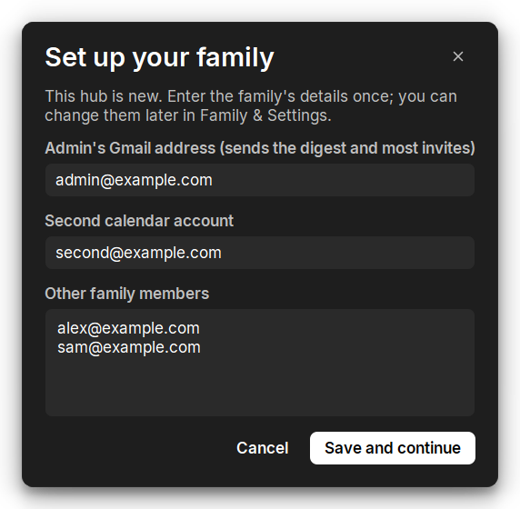
Set up your family
This only appears the first time a new hub starts. It asks for the family's details once.
- Admin's Gmail address (required). It sends the digest and most invites.
- Second calendar account (optional). A second person can send invites from their own calendar.
- Other family members, one email per line.
You can change all of this later in Family & Settings.
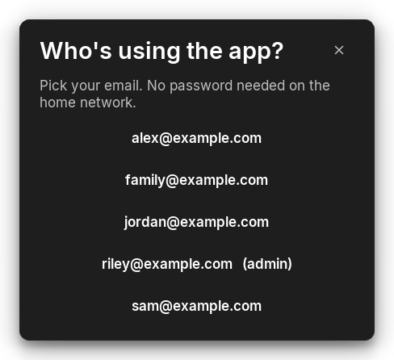
Who's using the app?
Pick your email and you're in. There's no password because everyone on the home network is trusted.
- The admin is marked (admin).
- Your choice decides whose name goes on changes in History, and who gets the digest when you ask for one.
- You can switch users anytime from the button at the bottom of the sidebar.
Today
Today's plan on one screen. This is the page the app opens on.
- Cars today is a 24-hour bar that's green when both cars are free, yellow when one is in use, and red when both are in use.
- Today's events show their car, replies (✓ ✗ ?) and how often they repeat.
- To-do list shows Overdue tasks first, then tasks coming up with their High Medium Low tags. Tick the circle to finish one.
- Send me my digest emails this summary to whoever is using the app.
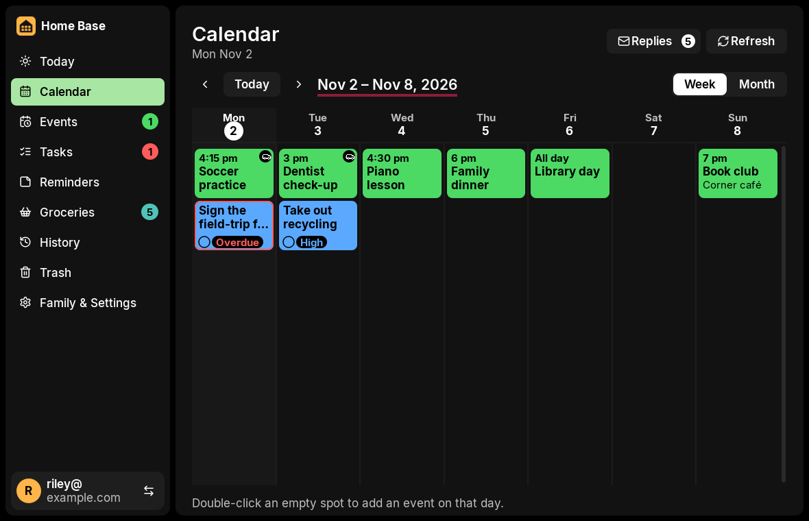
Calendar
Events (green) and tasks (blue) laid out in a Week or Month view.
- Use the arrows to move between weeks or months, and Today to jump back.
- Each month gets its own colour so it's easy to tell where you are.
- Double-click an empty spot to add an event on that day.
- Replies shows who has answered invites. Refresh brings in replies and anything changed in Google Calendar.
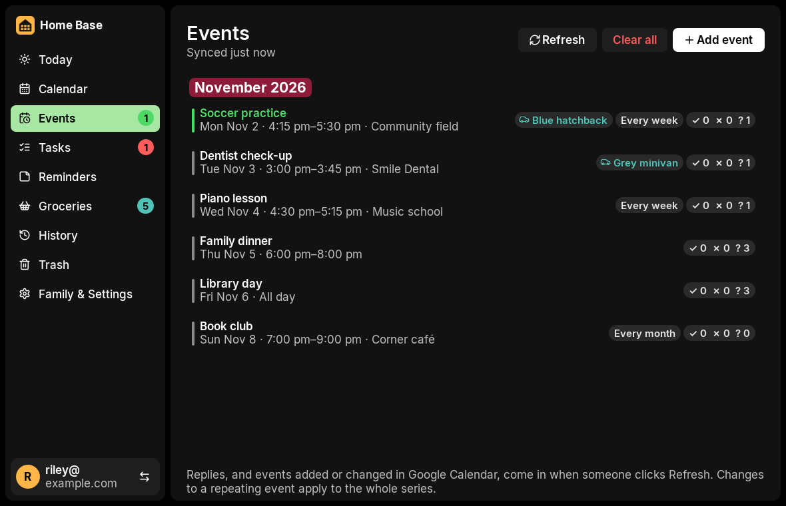
Events
Every upcoming event, grouped under month headings.
- Each row shows when and where, the car, how often it repeats, and replies as ✓ accepted · ✗ declined · ? waiting.
- Hover a row to edit it, change its car, hide it, or remove it. Removing an event cancels it in Google Calendar.
- Editing or removing a repeating event applies to the whole series.
- If Google couldn't be reached, the event shows "Not sent to Google" with Retry and Discard buttons.
- Add event, Refresh and Clear all are at the top.
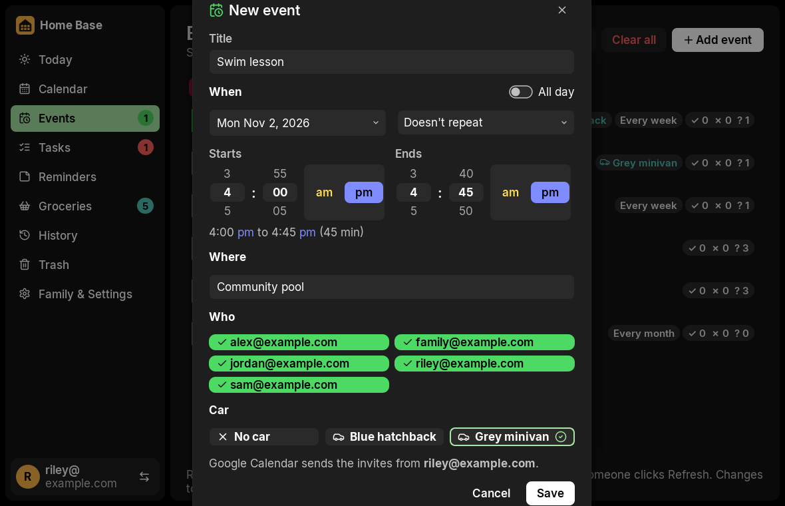
New event
Everything about an event, in one form.
- Title and Where.
- When: a date picker, scrolling time wheels with am/pm buttons, an All day switch and a repeat option. It shows the length (for example, 45 min) and stops an end time that's before the start.
- Who: tick the family members to invite.
- Car: No car, or one of the family's cars.
- The bottom line says which Google account will send the invites.
When you click Save, the hub checks for clashes and double-booked cars. If it finds one, it shows a warning and you choose to save anyway or change the event.
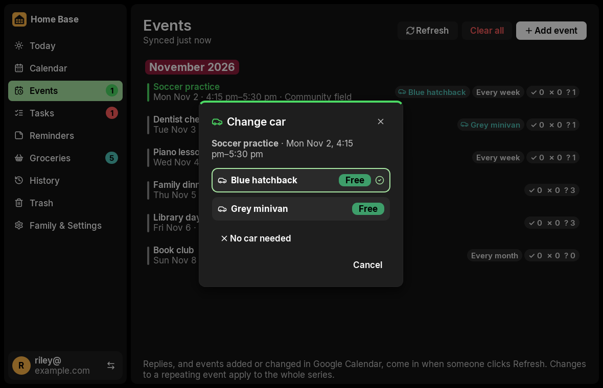
Which car?
Change the car for an event straight from the list.
- Each car shows Free or In use for that event's time.
- The current choice has a check mark.
- No car needed clears it.
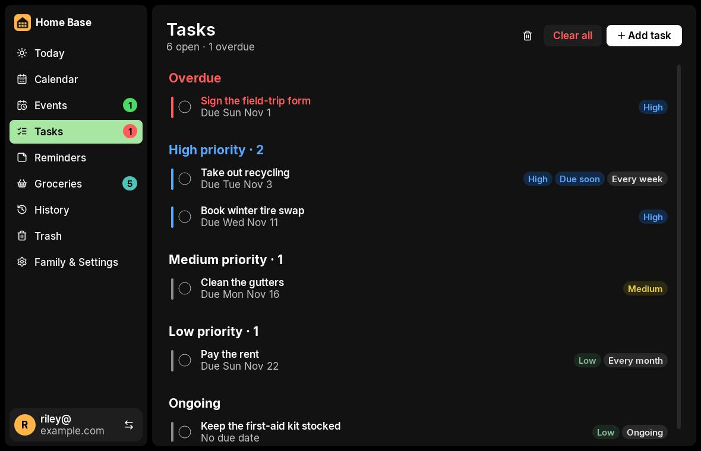
Tasks
The family's to-do list, sorted by urgency.
- Sections run in this order: Overdue, then High, Medium and Low, then Ongoing (no due date).
- A task due within 7 days moves up to High and gets a Due soon tag.
- Tasks can repeat. A monthly task on the 31st lands on the last day of shorter months.
- Tick the circle to finish a task. Finished tasks are kept in History.
- The bin icon sends one task to Trash. Clear all clears the whole list, with 10 seconds to undo.
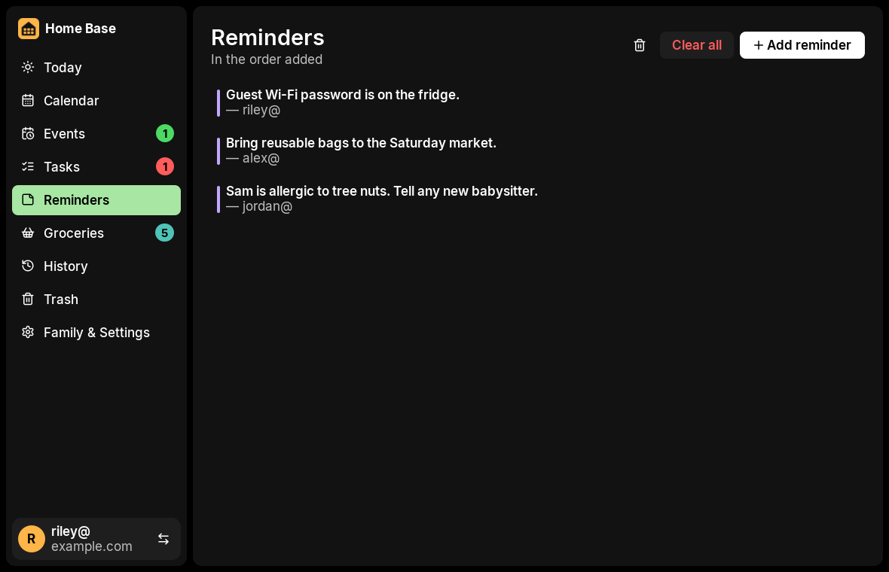
Reminders
Short notes for the whole family, in the order they were added. Reminders have no dates or times.
- Each note shows who added it.
- Use Add reminder to add one. Removing one sends it to Trash, and Clear all can be undone.
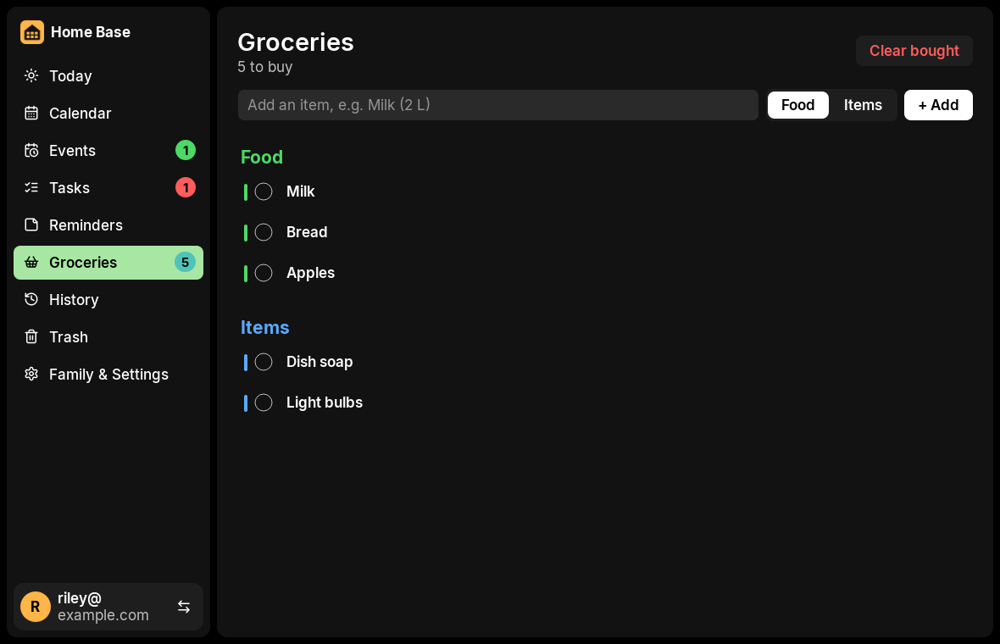
Groceries
The shared shopping list.
- Type an item, choose Food or Items, and click + Add.
- Tick items off as you buy them. Clear bought removes the ticked ones.
- Drag the grip, or use the arrows, to reorder the list.
- The sidebar badge shows how many items are left to buy.
History
This screen is recreated with demo data.
History
A log of who added, changed, finished or removed what, and when, for the last 30 days.
- Filter by list (Events, Tasks, Reminders…) and by person.
- Changes show before and after, like Car No car → Blue hatchback.
- Delete one entry, or Clear all. Both can be undone for a short time.
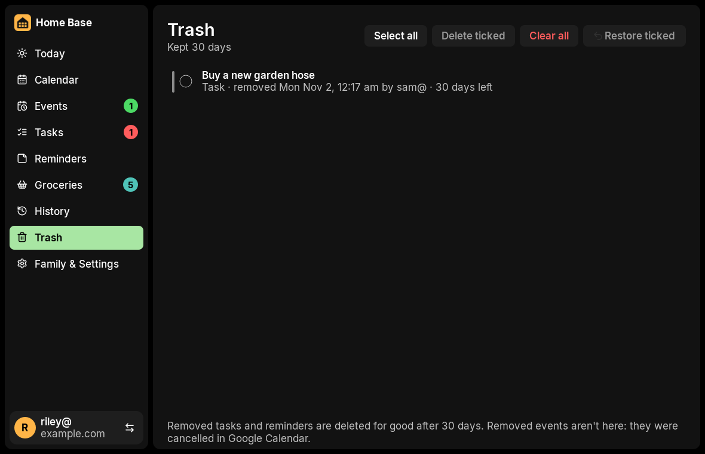
Trash
Tasks and reminders you removed wait here for 30 days.
- Each item shows when it was removed, by whom, and how many days are left.
- Tick items to Restore them or Delete them for good. You can also Select all or Clear all. Deleting can be undone for 10 seconds.
- Removed events don't come here. They're cancelled in Google Calendar instead.
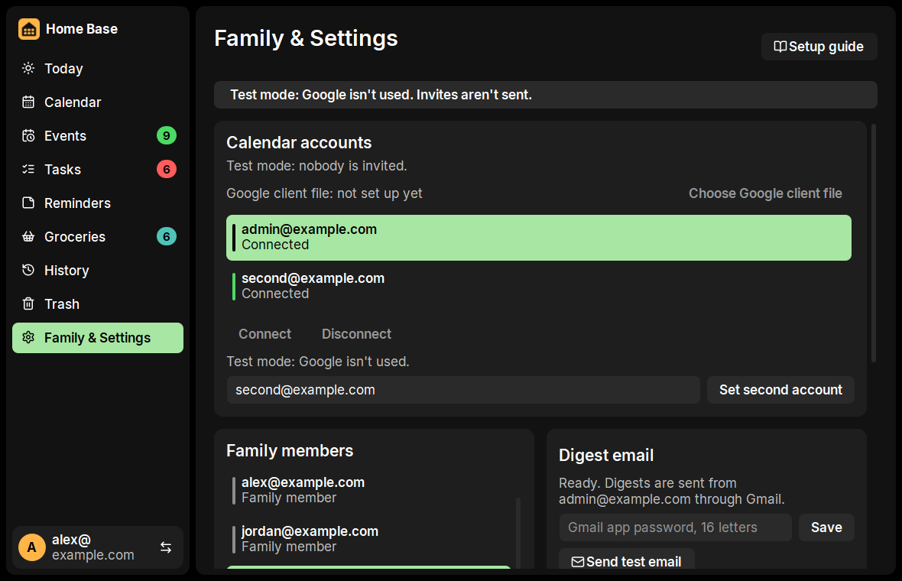
Family & Settings
The house's setup, organized into cards.
- Calendar accounts: choose the Google client file, then Connect, Disconnect or Reconnect each account. Connecting only works on the hub PC.
- Family members: add or remove people.
- Cars: the family's cars that events can use.
- Digest email: paste the Gmail app password and send a test email.
- This PC: hub status, address and last backup.
- Setup guide (top right) walks through Google and email setup step by step.
This screenshot is from test mode, where Google isn't used and no invites are sent.
Events
This screen is recreated with demo data.
When the hub is off
If the hub PC is off, asleep or on another network, a red banner appears and buttons that change things are greyed out. That way nobody saves changes that would get lost.
When the hub is back, the app reconnects by itself within a few seconds.
Where the information goes
Every change goes from the app, to the hub, and into the database. Each diagram below shows one common action.
1 · Adding an event
2 · How every PC stays up to date
3 · Removing things: undo, Trash and deleting for good
4 · Replies and Google changes
- Someone clicks Refresh (or opens the app).
- The hub asks Google Calendar for each event's replies, and for events added or changed directly in Google Calendar.
- The database is updated: ✓ accepted, ✗ declined, ? waiting.
- Every PC shows the new counts within seconds.
Replies only update on Refresh. The app never checks Google on a timer.
5 · The digest email
- On Today, click Send me my digest.
- The hub builds the summary: today's events, cars in use, overdue and high-priority tasks, and who hasn't replied.
- It sends the email through Gmail from the admin account to whoever is using the app.
- It's limited to 20 emails a day for the whole family, and a second click within a minute doesn't send twice.
6 · What the hub does on its own
| When | Job | Why |
|---|---|---|
| Every ½ second | Finishes any "Clear all" or delete whose 10-second undo time has run out | So Undo works the same on every PC |
| Every 10 seconds | Retries events marked "Not sent to Google" when they're due | Invites still go out after a short internet outage |
| When the hub starts | Schedules retries and syncs with Google once | Catches up after a restart |
| Once a day | Removes anything older than 30 days, saves a backup copy of the database, and keeps the last 7 copies | Keeps the data small and safe |
Inside the database
Everything lives in one SQLite file on the hub. The main records and how they connect:
secret table, encrypted with a key that only the hub PC can unlock.Up and running in a few steps
You need Windows 10 or 11 on every PC, all on the same home Wi-Fi (set to Private in Windows), and one PC that can stay on.
The basics (about 10 minutes)
- Get the installer,
HomeBaseSetup-X.Y.Z.exe. - Set up the hub. On the PC that stays on, run the installer and choose This PC is the home hub. It starts with Windows from then on.
- Add your family. Open Home Base. The first time, it asks for the admin's Gmail address and everyone else's address.
- Add the other PCs. Run the same installer on each one and choose Connect to the home hub. The app finds the hub by itself.
- Pick your name and go.
Optional extras (about 20 minutes, once)
- Google Calendar invites. Create a free Google Cloud project with the Calendar API turned on. No billing account or website is needed.
- Connect it. On the hub PC, go to Family & Settings → Choose Google client file, then Connect.
- Digest email. Create a Gmail app password, paste it under Family & Settings → Digest email, and send a test email.
The app's built-in Setup guide (Family & Settings, top right) walks through each screen. Tasks, reminders, groceries, History and Trash all work without Google.
The data stays at home
🏠 No outside server
There's no Home Base account, no cloud service, no ads and no tracking. The family's information is only on the hub PC.
🌐 Internet only if you set it up
The hub only goes online to send events through your own Google Calendar and, when asked, the digest through your own Gmail. Both are off until set up.
🔒 Secrets sealed to the hub
Google sign-ins and the Gmail app password are encrypted. The key is sealed to the hub PC by Windows, so a copy of the folder can't unlock them on another computer.
🧹 Kept 30 days
History, Trash, finished tasks and past events are cleared after 30 days. The hub only answers PCs on the home network.
Words used in the app
| Word | Meaning |
|---|---|
| Home hub | The PC that stays on and holds the family's data. |
| Admin | The family's main Google account. It sends the digest, and sends invites for anyone without their own calendar account. |
| Calendar account | A Google account connected on the hub that can send invites (the admin, plus an optional second one). |
| Organizer | The account that sent an event. Edits and removals always go through it, because Google only lets the organizer change an event. |
| Replies ✓ ✗ ? | Accepted, declined, and not replied yet. |
| Due soon | A task due within 7 days. It's treated as High priority. |
| Ongoing | A task with no due date. |
| Hidden event | An event that stays in Google Calendar but isn't shown in Home Base. |
| Test mode | A way to run the hub without Google. Events stay on the hub, nobody is invited and no email is sent. |
| Digest | A summary email of your day, sent only when you ask for it. |